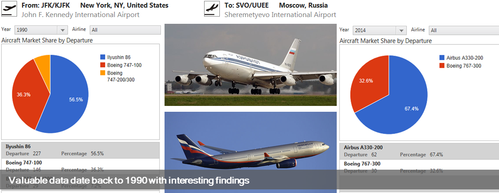
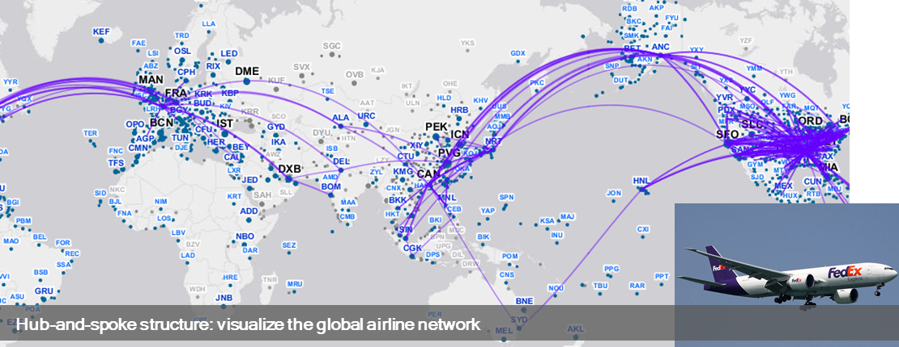
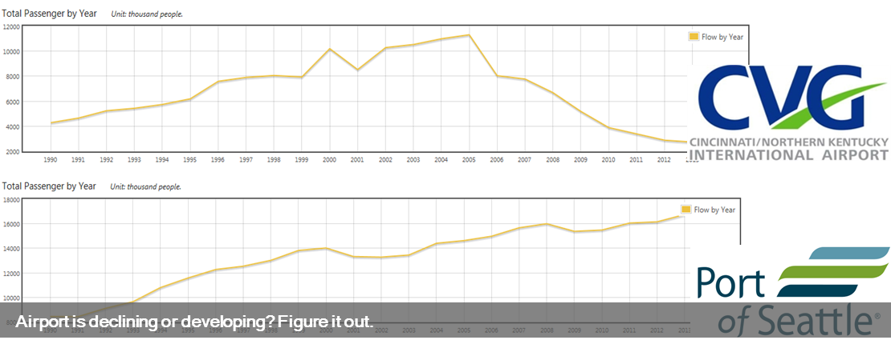
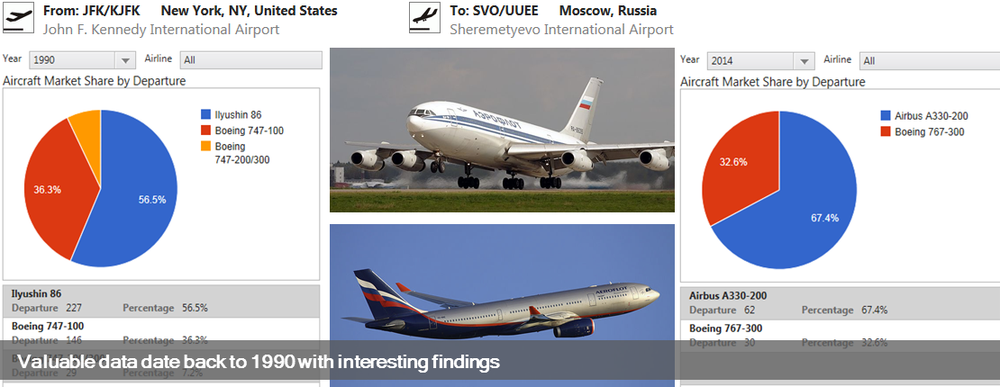
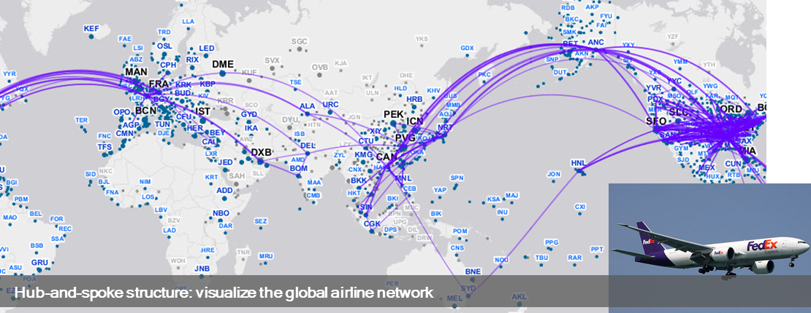
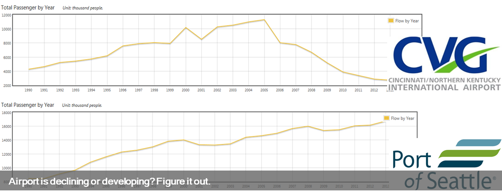

Introduction
In the past 40 years air transportation has undergone rapid development and come to be a major means of long-distance travel in many countries for both freight and passengers. Different agencies have accumulated huge amount of aviation data which are extremely valuable for research and market investigation. However, such data are usually difficult to find and hard to use.
Sky Explorer is a WebGIS that maps aviation data from multiple data sources in a vivid way and present the statistics in user-freendly format. The original version visualizes T100 Air Carrier Statistics, provided by Bureau of Transportation Statistics(BTS). The current version includes several databases.
Taking advantage of GIS and cartography technology, the texts and numbers in T100 Database are interpreted vividly. User can interact with the geographic data and get the fact more quickly. These maps and charts provides a good illustration of development and current landscape of the aviation industry. We believe that this WebGIS can benefit multiple actors involved in the air transportation process: travelers, airport planners, regional planners, policy makers, business decision makers, graduate students and researchers in transport geography.
Sample Scenarios
 





Here are some common scenarios of this application. We demonstrate its functions and features by answering some questions related to air transportation.
Please read this the user scenarios and FAQ page for more information.
Data Sources
The original version of Sky Explorer focuses on T100 Air Carrier Statistics, provided by Bureau of Transportation Statistics(BTS) in United States. In this new version, several new data from aviation authorities have been integrated. Here is a list of supported data sources in the system.
- US BTS T100 and T100FF Data
- UK CAA Data
- Taiwan CAA Data
- South Korea KAC Data
- Japan MLPT Data
- Wikipedia Data
Please refer the data source page for further information.
Data Properties
This system only have the data for schedule flights (including seasonal flights). Charters flights and non-scheduled flights are excluded from the system. The data of those airlines which only operating charter flights are omitted from the system.
Some routes with small flows would be filtered according to certain criteria. Generally speaking, we defined a standard for qualified routes. The monthly number of passengers and freight in these routes should exceed a minimum threshold for at least two months in one year. Only these routes are in the database.
Technology
This application takes advantage of open source technology. The geovisulization of aviation data is powered by several famous open source GIS software: PostGIS, GeoServer and OpenLayers. Python is utilized to process the source data. Besides, ESRI Basemap is used as the basemap for this WebGIS. Data service is implemented with Microsoft AST.NET. Another hightlight is that JavaScript programming is implemented with TypeScript, a free and open source programming language developed by Microsoft.
This WebGIS is tested under following browsers: Internet Explorer(only 9, 10 and 11), Firefox and Chrome.
About
This WebGIS is developed by Kejing Peng under the supervision by Professor Morton O'Kelly.
Our team try the best to keep all the records in the database accurate. However, we take no responsibility for the data within this website, nor any responsibility for the consequences of using the data within this website. Any suggestion is welcome. You can provide your opinion or suggestion to our team. You can also report any data errors in our system. Please send your message to: peng.184@osu.edu.
Acknowledgement
Thanks to the Department of Geography and the Center for Urban and Regional Analysis.
Special thanks to Shaun Fontanella and Jens Blegvad for hardware/server support.
Links
Copyright © 2014, Center for Urban and Regional Analysis, Department of Geography, The Ohio State University.